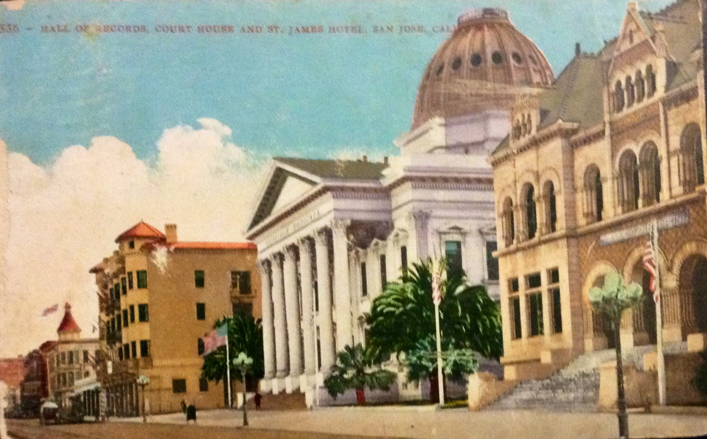
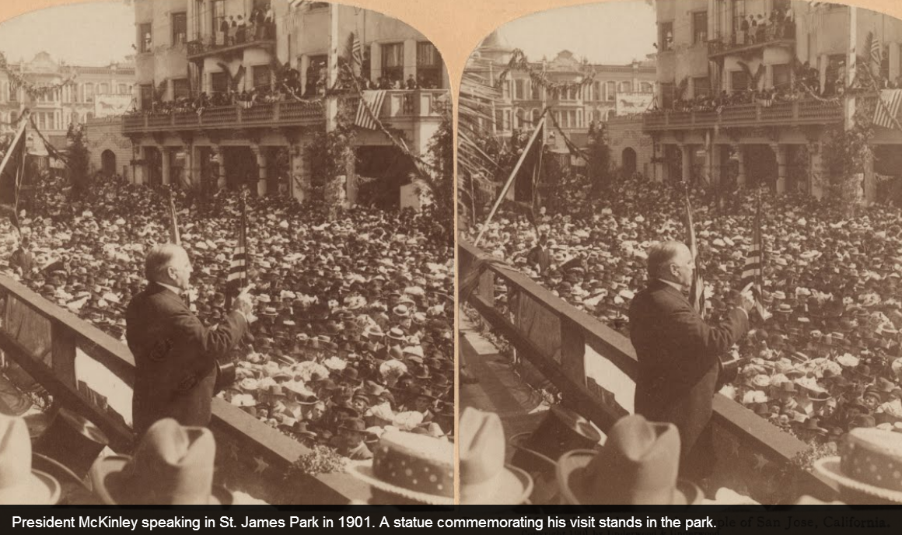
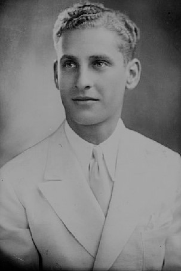

Stop 5 of 8
Main Post Office & St. James Square
Next: South First Street Historic Commercial Corridor →
Historic Photos



Next: South First Street Historic Commercial Corridor →
Historic Photos


